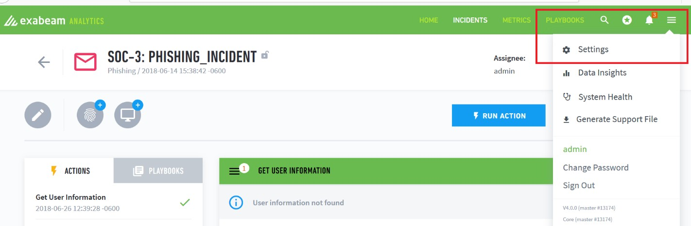
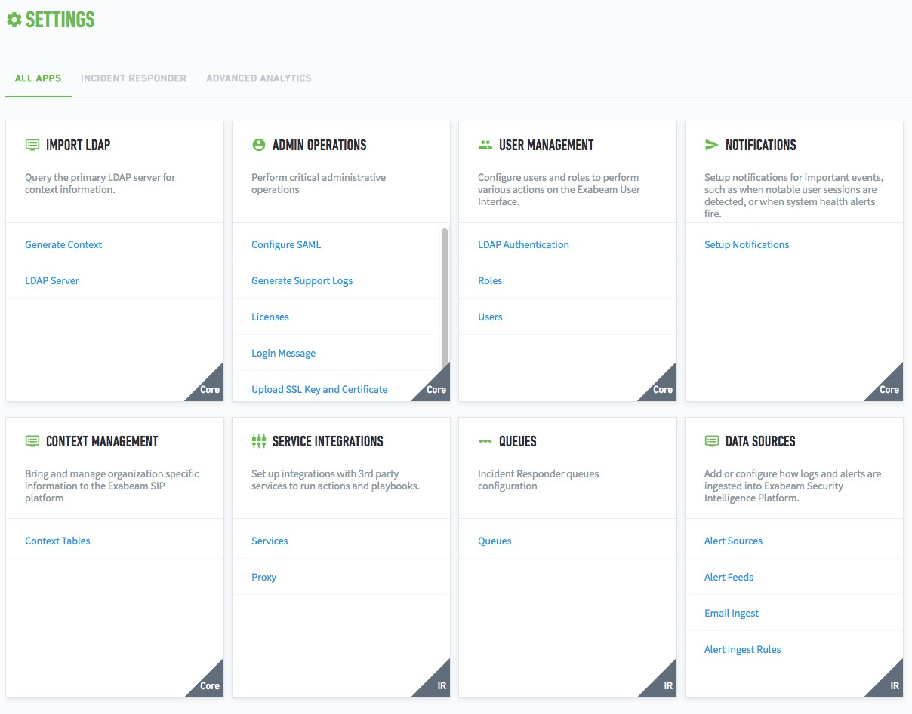
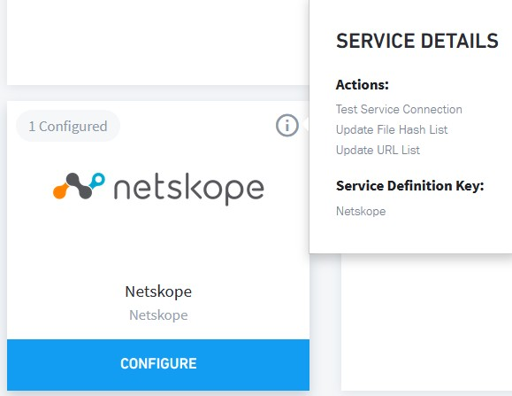

Integrate Netskope APIs with Exabeam Incident Responder
Get your Netskope API token before proceeding from the Netskope UI. You will need the token and your tenant name in order to complete this procedure.
Log in to Exabeam Incident Responder, click on the menu icon in the upper right-hand corner, and then click Settings.
 The Settings page opens.
 Scroll down to the Service Integrations panel and click on Services.

All supported Vendors and Integration Services appear.

Click on the Add a new service button to the right.

Click the Service dropdown list and select Netskope.

The Service Name will auto-populate. Enter your Netskope API Token and Tenant Name.

Enter just the Tenant Name, not the tenant URL:

Click the Test Connectivity button.

A successfully connected message should appear.

Click Save Service and the All Services panel opens. Scroll down to the Netskope panel and hover on it. You should see that one integration is configured and the info icon will appear.

Click on the circle-i icon to see the Exabeam Incident Responder actions that are available.
 Click Configure. Supported APIs are shown under Actions.